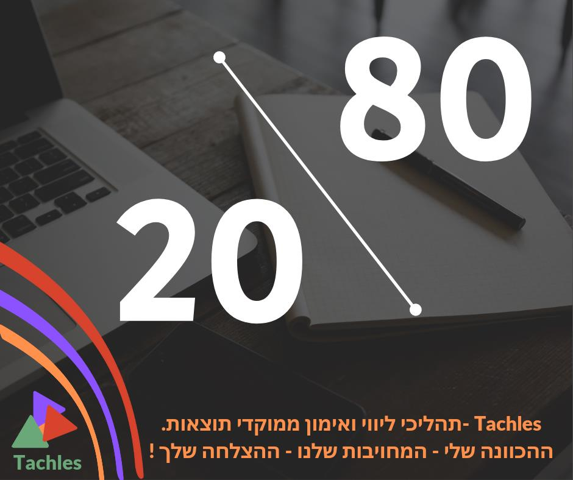

80 - 20 - הידוע גם בשמו "פארטו". 80% מה.... יתנו לכם 20% מה.... והפעם מזוית קצת שונה:
80% מפעולות השיווק יוצרות "לא"
20% מהפעולות יוצרות "כן".
אז מה הבעיה ? נעשה רק את ה 20% שיוצרות את ה"כן", זהו שלא ! אם נעשה את זה המשחק ייסגר שוב לסטטיסטיקה של 80/20 ושוב תהיינה לנו 80% פעולות שיוצרות לנו "לא". ככה זה בחיים, אי אפשר לנצח את "פארטו".
התובנה המשמעותית מהספור של 80/20 היא לא הרצון לצמצם את ה"לא" אלא היכולת שלנו להתמודד איתו ולהמשיך כדי לקבל את ה "כן".
מצליחנים מקבלים הרבה פעמים "לא", מקבלים ובגדול, ככול שעולים יותר בסולם ההצלחה, הנפילה היא מיותר גבוה והרבה יותר כואבת, יחד עם זאת מצליחנים למדו שמה שחשוב זה להתמקד ב 20% של ה - "כן", הם רואים בעיניים רק את ה"כן" וממשיכים לחפש אותו, לחתור אליו בלי לתת ל "לא" לעצור אותם.
זה לא פשוט - 80% של כשלונות זה נפילות לא פשוטות, זה כואב, זה שובר, זה מערער את הביטחון שתמצא את ה - "כן", ועדיין הם ממשיכים את הדרך, ממשיכים להרים טלפונים למרות שמנתקים להם בפרצוף, ממשיכים ליצור עוד פרויקט, ולהעלות עוד קמפיין שיווקי, ממשיכים בעשייה מבלי לתת ל "לא" להחליש את עוצמת הנחישות שלהם לניצחון.
זכרו דבר אחד - מנצח הוא לא מי שקבל פחות מ 80% "לא", מנצח הוא מי שהמשיך לחתור אל ה 20% ה"כן". מצליחנים ממשיכים את הדרך.
קבלו את ה"לא" כחלק מהדרך, לימדו ממנו והשתפרו ואז תגיעו אל ה"כן" של פסגת ה"הצלחה". ואז ? אז הביטו לאחור על כל ה 80% של הכשלונות והוקירו את עצמכם על הדרך.
רוצים ליישם את זה בעסק שלכם? אימון עסקי
פורסם במקור בבלוג שלי ב-BizMakeBiz.